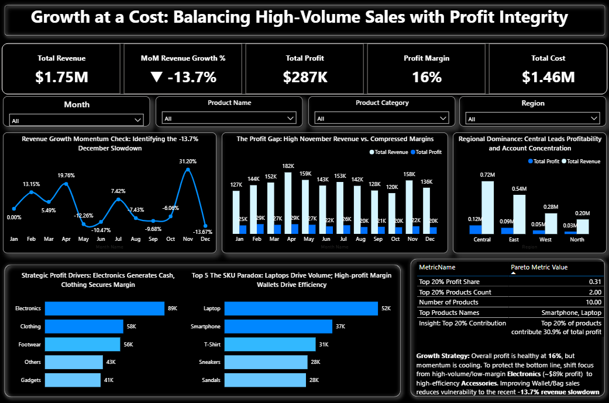

Executive Dashboard

Executive KPI & Margin Dashboard
A 2025 performance review surfaced a hidden trade-off: revenue grew while margins quietly fell.
$1.75M revenue
16.4% margin
Power BI
SQL
View Full Report on GitHub →